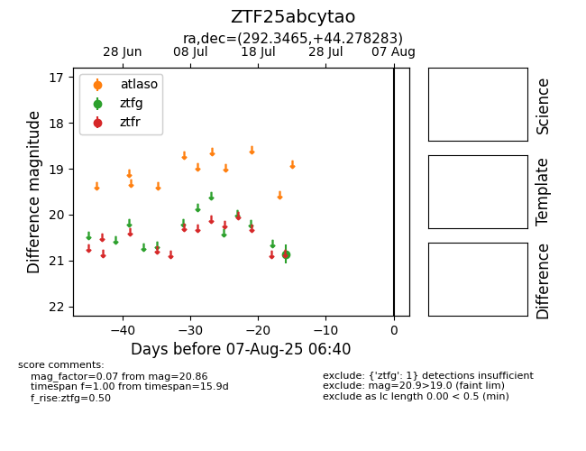

Target ZTF25abcytao at 2025-08-06 17:45, see:
FINK: fink-portal.org/ZTF25abcytao
Lasair: lasair-ztf.lsst.ac.uk/objects/ZTF25abcytao
ALeRCE: alerce.online/object/ZTF25abcytao
alt names
ZTF25abcytao (ztf,fink)
coordinates:
equatorial (ra, dec) = (292.3465,+44.27828)
galactic (l, b) = (76.6456,+12.31685)
photometry
last ztfg=20.86
1 ztfg detections
